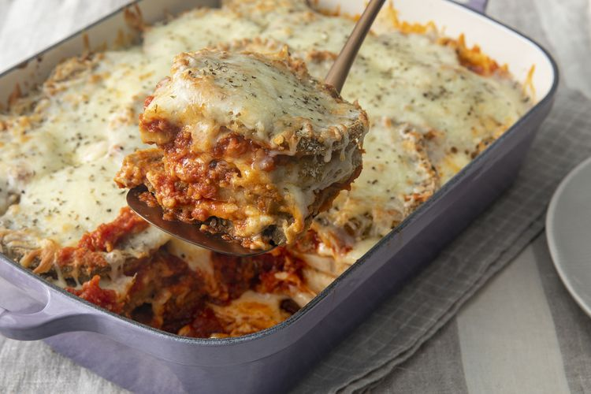

Eggplant Parmesan

This is just a random recipe I found online. Honestly it looks terrible, I have no idea why anyone will
try to make this dish as even the image looks terrible. It looks like something from a witch's cabin that's
been sitting in a wet corner for centuries, and then the witch put it into a microwave but still did not
eat it as even a witch cannot stand the thought of eating it.
However, many people on the website have rated this dish and seems to have enjoyed eating it. I can
only conlucde that they gravely misunderstood the instructions as there is no way anyone would have
enjoyed this dish if they followed the proper steps.
Ingradients
- 3 large eggplant, peled and thinly sliced
- 2 large eggs, beaten
- 4 cups Italian seasoned bread crumbs
- 6 cups spaghetti sauce, divided
- 1 (16 ounce package mozzarella cheese, shredded and divided
- 1/2 cup rated Parmesan cheese, divided
- 1/2 teaspoon dried basil
Steps
- Preheat the oven to 350 degrees F (175 degrees C).
- Dip eggplant slices in beaten egg, then in bread crumbs to coat. Place in a single layer on a
baking sheet
- Bake in the preheated oven for 5 minutes. Flip and bake for 5 more minutes.
- Spread spaghetti sauce to cover the botom of a 9x13-inch baking dish. Place a layer of eggplant
slices in the sauce. Sprinkle with mozzarella and Parmesan cheeses. Repeat layers with remaining
sauce, eggplant, and cheese, ending with a cheese layer. Sprinkle basil on top.
- Bake in the preheated oven until golden brown, about 35 minutes.